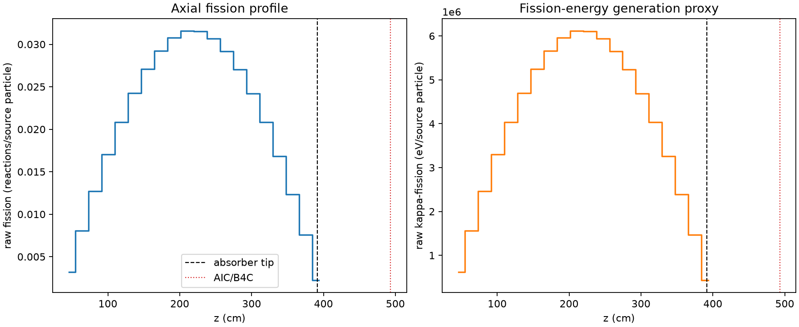
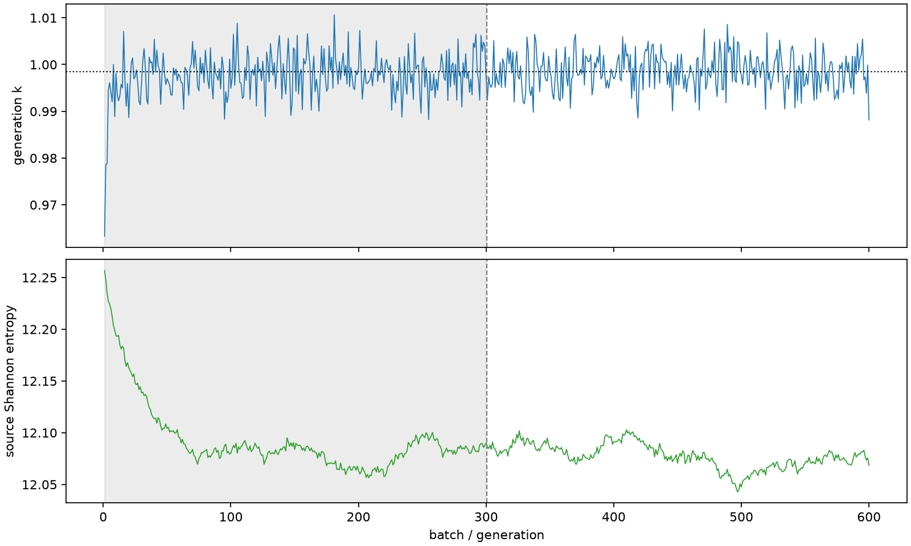

| field | value |
|---|---|
| experiment | V2-STAGE_256_OGRENCI_02-0012 |
| k | 0.998537308100897 |
| MC standard error | 0.00015698224452831145 |
| seconds | 996.2036940850012 |
| acceptance | not_assessed |
| convergence | review_required |
Completed is output integrity only; physical and statistical review required. Zero tallies do not prove zero production or zero uncertainty.
| diagnostic | value |
|---|---|
| geometric fuel voxels | 5280 |
| zero fission tally voxels | 0 |
| low signal fuel voxels | 0 |
| low signal fission share | 0.0 |
| low signal kappa share | 0.0 |
| important fission share | 0.9500739159149554 |
| previous filter included | 5280 |
| duration estimate s | 1562.5173488400023 |
| actual minus estimate s | -566.3136547550012 |
| fission relative MC error | statistics |
|---|---|
| all_geometric_fuel | {"voxels": 5280, "positive_mean_voxels": 5280, "zero_mean_voxels": 0, "undefined_relative_error_voxels": 0, "median": 0.009737778296605396, "p95": 0.028065602247401567, "maximum": 0.03560825111668415} |
| low_signal | {"voxels": 0, "positive_mean_voxels": 0, "zero_mean_voxels": 0, "undefined_relative_error_voxels": 0, "median": null, "p95": null, "maximum": null} |
| important_95pct | {"voxels": 4246, "positive_mean_voxels": 4246, "zero_mean_voxels": 0, "undefined_relative_error_voxels": 0, "median": 0.009182565786540337, "p95": 0.013365512583340938, "maximum": 0.016797000099487418} |
| outside_previous_filter | {"voxels": 0, "positive_mean_voxels": 0, "zero_mean_voxels": 0, "undefined_relative_error_voxels": 0, "median": null, "p95": null, "maximum": null} |
| kappa_fission relative MC error | statistics |
|---|---|
| all_geometric_fuel | {"voxels": 5280, "positive_mean_voxels": 5280, "zero_mean_voxels": 0, "undefined_relative_error_voxels": 0, "median": 0.009724333191469817, "p95": 0.028021618131828137, "maximum": 0.035561899850491505} |
| low_signal | {"voxels": 0, "positive_mean_voxels": 0, "zero_mean_voxels": 0, "undefined_relative_error_voxels": 0, "median": null, "p95": null, "maximum": null} |
| important_95pct | {"voxels": 4246, "positive_mean_voxels": 4246, "zero_mean_voxels": 0, "undefined_relative_error_voxels": 0, "median": 0.009170435559638188, "p95": 0.013347561309600027, "maximum": 0.016772861260327284} |
| outside_previous_filter | {"voxels": 0, "positive_mean_voxels": 0, "zero_mean_voxels": 0, "undefined_relative_error_voxels": 0, "median": null, "p95": null, "maximum": null} |
| axial bin | fission share | kappa-fission share |
|---|---|---|
| 1 | 0.007800658058176016 | 0.007801113079126589 |
| 2 | 0.019771186180854584 | 0.019771309712597954 |
| 3 | 0.03117566751401799 | 0.031175637611919972 |
| 4 | 0.04185426269307121 | 0.0418541761693022 |
| 5 | 0.05124474022866065 | 0.05124469969471016 |
| 6 | 0.05961366449049724 | 0.059613579850970294 |
| 7 | 0.06648144113340737 | 0.0664811018119187 |
| 8 | 0.0717704355871775 | 0.07177024415637666 |
| 9 | 0.0756157658618997 | 0.07561560338868663 |
| 10 | 0.07751682035694576 | 0.0775167875149763 |
| 11 | 0.07744323809689908 | 0.0774429544932748 |
| 12 | 0.07529022614653619 | 0.07529019307652701 |
| 13 | 0.07168816879885287 | 0.07168817373126002 |
| 14 | 0.06643146562957206 | 0.0664314929827715 |
| 15 | 0.05943355873870614 | 0.05943346238003954 |
| 16 | 0.05113058290868859 | 0.051130541049058224 |
| 17 | 0.04129823182007072 | 0.04129818793716393 |
| 18 | 0.03036335722874002 | 0.030363346695266902 |
| 19 | 0.018578380167824746 | 0.01857829458009434 |
| 20 | 0.005498148359401543 | 0.005499100083958224 |
Histories include the inactive-to-active transition at batch 300. kappa-fission approximates fission energy production, not total heat deposition.

